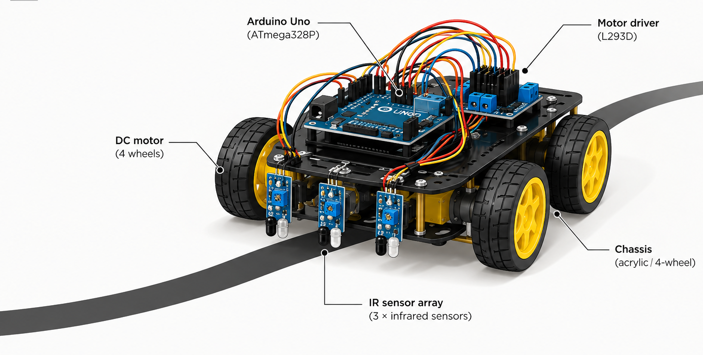

01
Arduino controller
Runs the embedded sketch, reads digital inputs, and writes output states to control the motors.
An Arduino-based four-wheel robot project exploring infrared sensing, motor control, and path-following logic.

Objective: use IR sensor inputs and Arduino motor commands to guide a robot along a marked path.
The project combines digital I/O, sensor interfacing, motor actuation, and embedded control logic.
Runs the embedded sketch, reads digital inputs, and writes output states to control the motors.
IR sensor inputs are referenced on digital pins 11 and 12 in the uploaded motor-control sketches. The final sensor module and calibration are not identified.
Four digital output pins, 7–10, are used as motor-control signals. Comments associate pins 10/9 with the left motor and 8/7 with the right motor.
Separate sketches test motor outputs, serial-command motion, sensor response, and LED blinking as part of the development process.
Completed undergraduate academic project · Grade A+.
The Arduino C/C++ sketches configure pins in setup() and run control logic in loop(). Serial-control versions use 9600 baud and single-character commands.
| Pin | Role in code | Evidence / notes |
|---|---|---|
D7 | Right-side motor control signal | Paired with D8 in comments and output routines. |
D8 | Right-side motor control signal | Paired with D7 in comments and output routines. |
D9 | Left-side motor control signal | Paired with D10 in comments and output routines. |
D10 | Left-side motor control signal | Paired with D9; also used by the LED-blinking sketch. |
D11 | Sensor input | Configured as INPUT in day_5_feb.ino and full_motor_1.ino; not read by their shown command loop. |
D12 | Sensor input | Configured in serial-control sketches; read by the separate sensor test sketches. |
full_motor_1.ino and day_5_feb.ino assign HIGH/LOW patterns to D7–D10. Actual wheel direction depends on the driver wiring and motor orientation.
| Function | D10 | D9 | D8 | D7 | Action |
|---|---|---|---|---|---|
forward() | LOW | HIGH | HIGH | LOW | Forward |
backward() | HIGH | LOW | LOW | HIGH | Backward |
right() | HIGH | HIGH | LOW | HIGH | Right turn (as named in code) |
left() | HIGH | LOW | HIGH | HIGH | Left turn (as named in code) |
halt() | LOW | LOW | LOW | LOW | Stop outputs |
led_blinking.ino toggles D10 with short delays; 2.ino initializes D7–D10 as outputs and repeatedly writes states to D9/D10.motar.ino alternates a motor-output pattern and a stop state. fulll_motor.ino defines motion functions and cycles through them, though several functions use identical output patterns in this version.both_motor.ino initializes D7–D10 and writes output patterns for labelled forward, backward, right, left, and stop phases. In the uploaded version, the four movement phases use the same pattern, so they do not independently demonstrate distinct directions.full_motor_1.ino maps F/B/L/R/S (uppercase or lowercase) to forward, backward, left, right, and halt. day_5_feb.ino maps W/S/A/D/X to similar functions. Serial communication is configured at 9600 baud.sketch_feb04a.ino changes output states based on D12. senser.ino also reads D12, but its logic has a stray semicolon after the first if, so the following block executes unconditionally. These files need correction before being treated as validated sensor-control behaviour.The sketches document component tests and successive control experiments.
full_motor_1.inoSerial control at 9600 baud; F/B/L/R/S commands (case-insensitive); motor outputs on D7–D10; D11 and D12 configured as inputs.day_5_feb.inoSerial control at 9600 baud; W/S/A/D/X commands; similar motor-output functions; sensor pins configured but not used by the command decision logic.both_motor.inoCombined motor-output test with labelled movement stages and a stop stage. Movement stages currently share the same output pattern.motar.inoSimple output test alternating a labelled forward pattern with all four motor-control outputs LOW.fulll_motor.inoDefines forward/backward/left/right/halt functions and runs a timed sequence; several movement functions use identical output states in the supplied version.fulll_motor2.inoAttempted serial-controlled D10 output. The statement char ch=Serial,read(); is malformed and needs correction to Serial.read() before compilation.2.inoConfigures D7–D10 as outputs and repeatedly writes HIGH to D10 and LOW to D9 with delays.led_blinking.inoIntended LED blinking sequence on D10. The uploaded sketch appears to be missing a closing brace in setup(), so it should be fixed before compilation.sketch_feb04a.inoReads D12 and sets D7–D10 LOW when input is HIGH, or HIGH when input is LOW.senser.inoReads D12 and clears outputs; a stray semicolon after if (digitalRead(12)==0) changes the intended conditional behaviour.| Item | Evidence in supplied files |
|---|---|
| Output initialization | D7–D10 are configured as outputs in multiple sketches. |
| Serial interface | Two sketches call Serial.begin(9600) and read one character at a time. |
| Movement command mapping | F/B/L/R/S and W/S/A/D/X are mapped to named motion functions. |
| Sensor input setup | D11 and D12 are configured as inputs in serial-control sketches; D12 is read in sensor experiments. |
| Autonomous line tracking | No supplied sketch clearly implements a complete continuous two-sensor-to-motor decision loop. |
| Tracking accuracy, speed, and reliability | No measurements, test log, video, or performance dataset was included with the code files. |
The code progresses through pin setup, motor-output tests, serial commands, and sensor-input experiments.
Serial commands are manual control, not autonomous navigation.
senser.ino includes a stray semicolon after an if statement, changing the control flow.fulll_motor2.ino contains a malformed serial-read statement, and led_blinking.ino appears to have an unmatched brace.github.com/aryan-mat-research/Robotic_Project
pinMode(), digitalRead(), digitalWrite(), delay(), and serial communication. Arduino Language Reference.